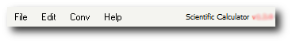

What is the menu?

What is a submenu?
A submenu is a branch within the main headers of the menu. Click on the main header File. You will notice other menus extend from it (Reload and Close); these are called submenus.
What are submenu notations?
A submenu notation is similar to a webpage breadcrumb menu.
For example if you were specified to click File and then click Reload, then the menu notation would be "select Reload under File > Reload".